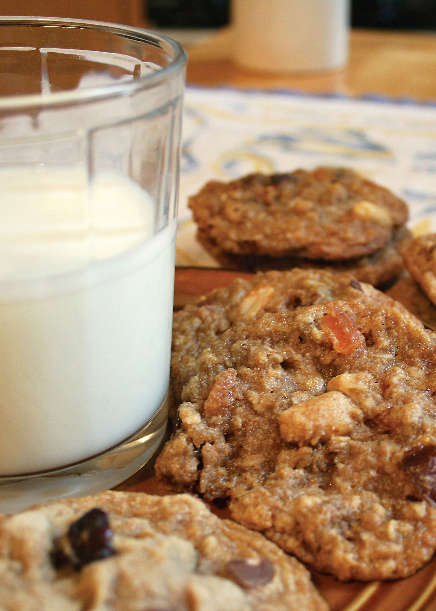

The ever-growing popularity of all things organic has encouraged a boom in organic and hormone-free dairy products. While this trend gives us more healthy and affordable options at the grocery store, it also has given rise to a number of dairies willing to bend the rules for a share of the profit. But the Cornucopia Institute, a nonprofit small farm advocacy group, has developed a way to enable consumers to identify the best dairy brands. The report, Maintaining the Integrity of Organic Milk, includes a scorecard that rates 68 different organic dairy brands against a set of criteria central to true organic standards. Check out the milk brand scorecard.
|
 TABITHA ALTERMAN You'll enjoy that tall glass of fresh, cold milk even more when you're sure it came from a well-managed organic dairy. |
|
|